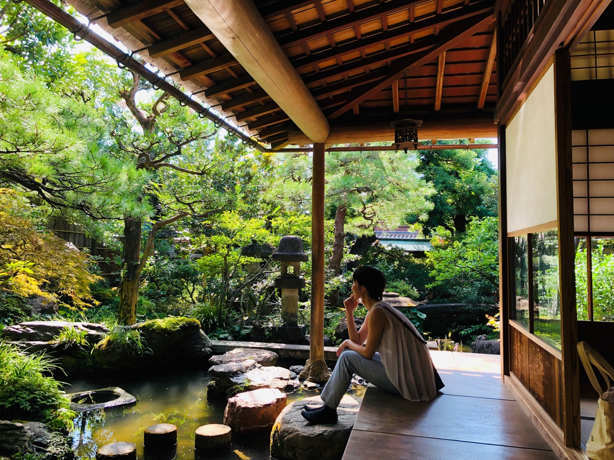
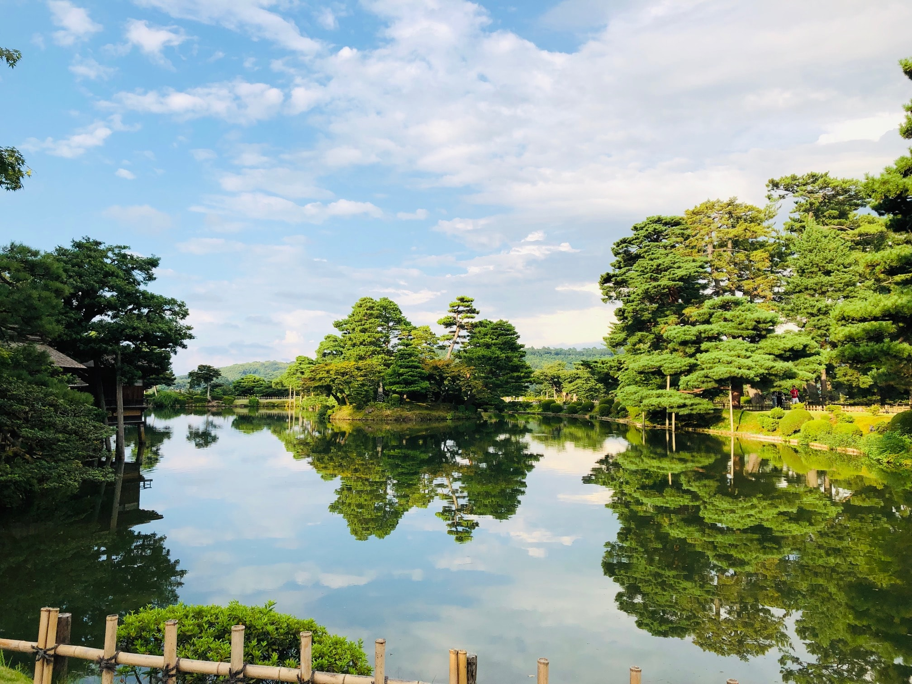
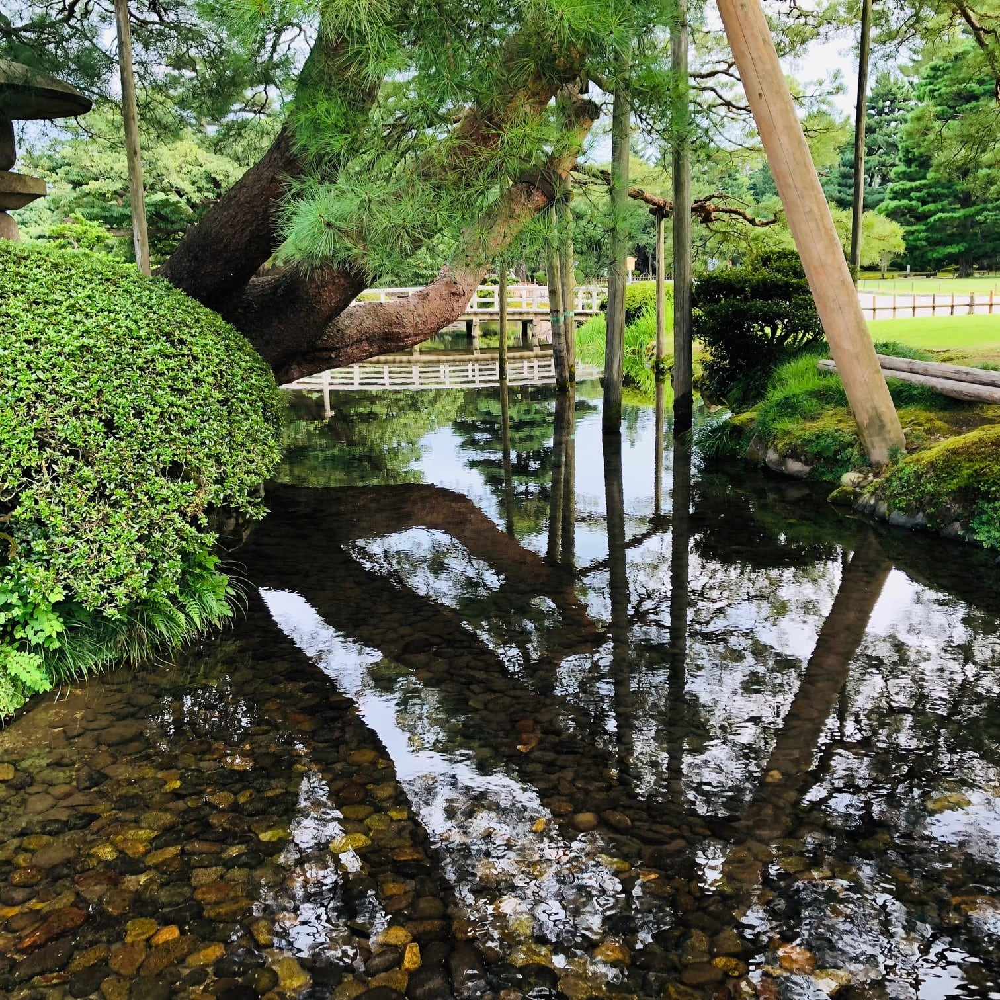
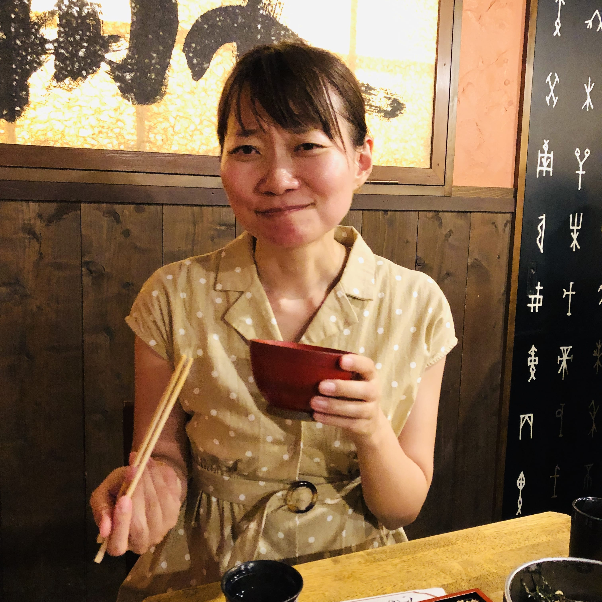

08:44 東京駅
東京から新幹線で３時間。いつか必ず行きたいと思っていた念願の金沢に向かってます！のどかな風景がつづきま～す
11:49 金沢駅
はい、到着！お喋りしていたらすぐだったね♪めっちゃいい天気～空青い～そして緑きれい～
まずは、やんちゃん、駅ビル「あんと」でたい焼きを(´～｀)ﾓｸﾞﾓｸﾞ。旅の胃袋のチョンチョです☆
13:00 近江町市場
ここが、有名な近江町市場で～す！カキ、アユの塩焼き、キラキラ茄子も美味しそうですが、、まずはやっぱり！

海鮮っしょ！！！「山さん」というお店を予約していて、個室に通してくれました！
やんちゃん「海鮮丼」、ななみ「特上にぎり」。やばい。。美味しいとき、二人はこういう顔をします笑
そしてここからはバスで動きま～す。すぐ近くのANAホリデイン金沢ロビーで1日券売っているようなので行ってみます。 ロビーは16階。EVに乗って、チーン 着きました。EVの扉が開いて私たちの目に入ってきたのは。。。
やんちゃん「海鮮丼」、ななみ「特上にぎり」。やばい。。美味しいとき、二人はこういう顔をします笑
そしてここからはバスで動きま～す。すぐ近くのANAホリデイン金沢ロビーで1日券売っているようなので行ってみます。 ロビーは16階。EVに乗って、チーン 着きました。EVの扉が開いて私たちの目に入ってきたのは。。。
じゃーん！！！
三位からの粋なパノラマビューのプレゼント！！！新婦のハート、がっつり掴まれました(^^♪
三位からの粋なパノラマビューのプレゼント！！！新婦のハート、がっつり掴まれました(^^♪
14:30 長町武家屋敷


ん～金沢っぽい。この路地入っても、あの路地入っても、金沢っぽい。そしてめちゃくちゃ丁寧に手入れされてる感満載！
続いては、武家屋敷跡 野村家で撮影タイム♪
続いては、武家屋敷跡 野村家で撮影タイム♪


いい画が撮れました！畳が気持ちよくて、裸足でーす。リラックスモード全開笑
15:30 金澤パフェむらはた＠主計町茶屋街
この建物の2階です。お腹の具合から、二人で一つ、期間限定のテイクアウトパフェ【水蜜桃】を頬張りました。
これが、みずみずしくてむーっちゃくーっちゃ美味しい！！ 明日も食べたい！他の種類も食べたい！というわけで明日のお持ち帰りアイテムに確定☆
これが、みずみずしくてむーっちゃくーっちゃ美味しい！！ 明日も食べたい！他の種類も食べたい！というわけで明日のお持ち帰りアイテムに確定☆
16:00 兼六園＆金沢城公園



かっこいい松が沢山ありました！形象も色々ありそう♪
やんちゃんとななみを象徴する形象があったら見せてください...モゴモゴ心でつぶやいた。そしたら、
やんちゃんとななみを象徴する形象があったら見せてください...モゴモゴ心でつぶやいた。そしたら、
V字松をたくさん見ました！勝利を象徴！？わーい！！！！
新婦と万物の傑作品(*´▽｀*)
金沢城公園もこれで終わり。さてホテルに向かおう、と最後に橋の上でパシャリ。
すると、やんちゃんがいきなり叫び出した。なに！？ななみ振り向く。そこにあったのは、、、
すると、やんちゃんがいきなり叫び出した。なに！？ななみ振り向く。そこにあったのは、、、
にーーじーーーだーーーーーー！
にーーじーーーだーーーよーー！！
雨も降ってないのに！すごいすごい！はしゃぎMAX。
にーーじーーーだーーーよーー！！
雨も降ってないのに！すごいすごい！はしゃぎMAX。
18:30 ホテルチェックイン＆大浴場
夕飯前にいったん汗を流そうとなりホテルにチェックインして最上階の浴場に。浴場は東向きだと知り、心ばかり期待していた夕陽は見えないかぁとしょんぼり。。
が、エレベーターを降りた私たちの視界に入ったのはこれでした。。
が、エレベーターを降りた私たちの視界に入ったのはこれでした。。
わーーー！！！ジャストタイム！！まさに日の入りスタート！！！
ん？線香花火の先っちょ？確かに笑
秒単位で時を合わせてくるとは・・・こんなこと誰ができるだろうか。
こんなにサプライズを沢山++ もうテンションのキャパ超えです~~
ん？線香花火の先っちょ？確かに笑
秒単位で時を合わせてくるとは・・・こんなこと誰ができるだろうか。
こんなにサプライズを沢山++ もうテンションのキャパ超えです~~
19:30 夜の散歩＆のどぐろ「いたる」
金沢城公園がライトアップされてま～す♪そこを通って目指すは香林坊方面にある、のどぐろのお店「いたる」。
予約していなかったけど入れました！心もお腹もスタンバイOK！さぁ、のど黒めしCamone！
予約していなかったけど入れました！心もお腹もスタンバイOK！さぁ、のど黒めしCamone！

本当に美味しいと無言になるのね。炙り加減最高、脂のり最高、のどぐろが持つ本来の甘み最高、薬味最高、、
日本人最高(≧∇≦)/
はい、 ノンストップで完食！
帰りに何か飲みたくなってスタバへ♪
はい、 ノンストップで完食！
帰りに何か飲みたくなってスタバへ♪

近くで雑誌の撮影をしていたようです。勝手にモデルさんパシャリ。
無事にホテルに戻ってきました～。ホテルは「三井ガーデンホテル金沢」です！
無事にホテルに戻ってきました～。ホテルは「三井ガーデンホテル金沢」です！
ホテルの外観も金沢っぽい！ロビーいい香り！お部屋も綺麗！！
再びお風呂につかって（口コミで好評だった夜景はいづこ？？笑）、おやすみなさ～いzZ...
再びお風呂につかって（口コミで好評だった夜景はいづこ？？笑）、おやすみなさ～いzZ...